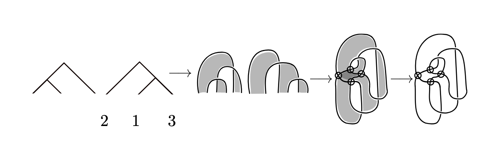
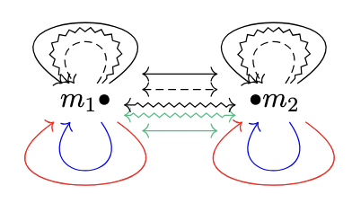
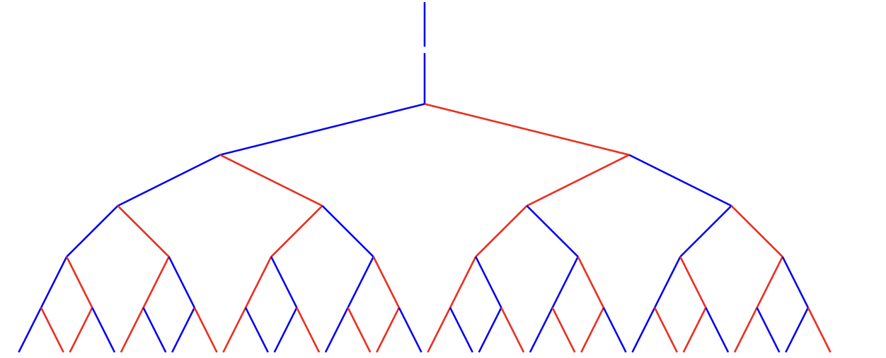
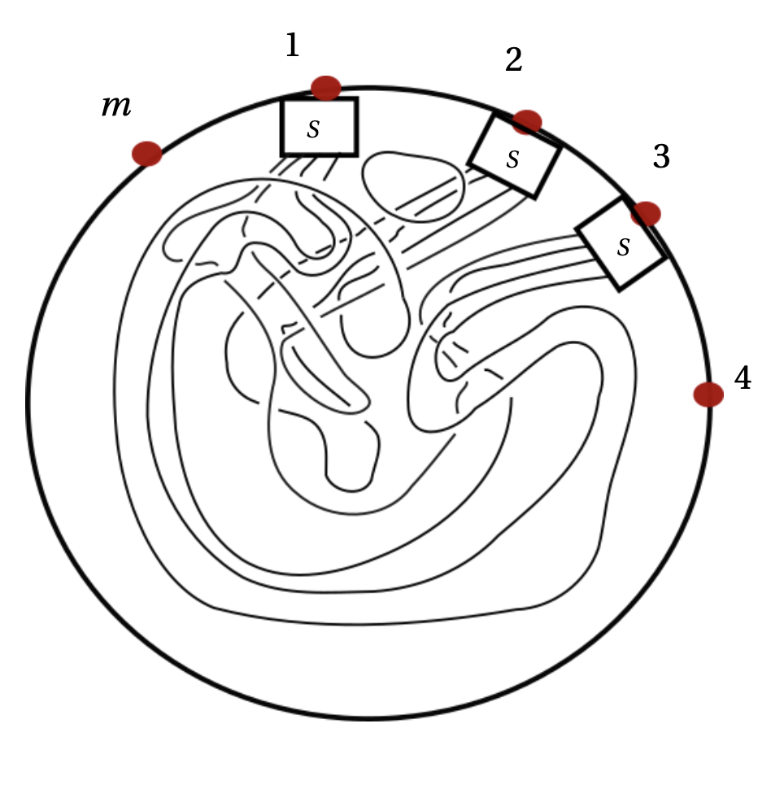
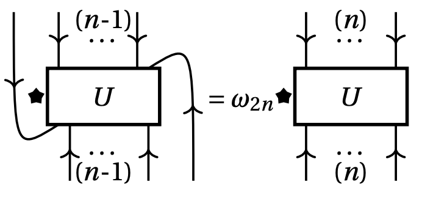
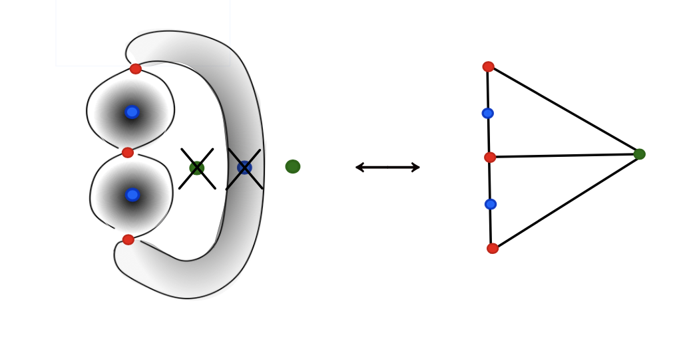
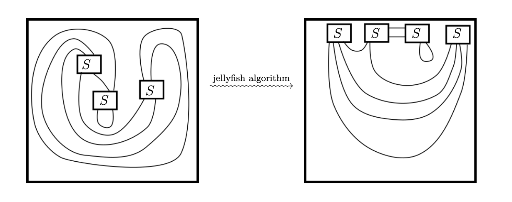

Papers
- Thompson's Group \(V\) and Virtual Link Theory (with M. Chrisman and L. Liles)
Submitted. - NIM-representations of Tambara-Yamagami generalizations (with A. Czenky, E. McGovern, M. Müller, and A. Ros Camacho)
Submitted. - A Mirror Deformation of Markov Numbers
(with L. Bittmann, P. Jouteur, E. Kantarcı Oğuz, and E. Yıldırım)
Submitted. - A Well-Defined Jellyfish Algorithm for the Affine \(E_7\) Subfactor Planar Algebra
To appear in the Journal of Pure and Applied Algebra. - Skein Theory of Affine A Subfactor Planar Algebras
Submitted. - A Determinant Formula of the Jones Polynomial for a Family of Braids
(with D. Asaner, S. Kumar, A. Pease, and A. Poudel)
Topology and its Applications, 384 (2026) - Derya Asaner*
- Sanjay Kumar
- Andrew Pease*
- Anup Poudel
Details
[arXiv:2607.28406] Collaborators: Keywords: Thompson's groups, virtual links, unitary representations, quandles Abstract: Thompson’s groups \(F \subset T \subset V\) were introduced in 1965 and have since found widespread application in fields as diverse as logic, group theory, homotopy theory, and lattice gauge theory. In 2014, V. F. R. Jones constructed unitary representations of \(F\), factoring through a surjection from \(F\) to isotopy classes of links in \(S^3\). The second author extended Jones’ surjection to \(T\), thereby constructing all isotopy classes of checkerboard colorable (CC) links in the thickened annulus. We complete this program for \(V\), defining a surjection \(\mathcal{L}_{V}\) from \(V\) to virtual equivalence classes of CC links in thickened compact oriented surfaces. This yields a new oriented subgroup \(\vec{V} \subset V\) containing Jones' oriented subgroups \(\vec{F} \subset F\) and \(\vec{T}\subset T\). We prove \(\vec{V}\) realizes all oriented almost classical virtual links. We then construct unitary representations of \(V\) and \(\vec{V}\) from kei and operator quandle coloring invariants, respectively.
Details
[arXiv:2602.23502] Collaborators: Keywords: NIM-representations, Tambara-Yamagami, fusion rings, algebra objects, fusion categories, Jordan-Larson fusion ring, Galindo-Lentner-Möller fusion ring Abstract: We compute and classify the irreducible non-negative integer matrix (NIM-)representations of two proposed generalizations of the Tambara-Yamagami fusion ring, as studied by Jordan-Larson and Galindo-Lentner-Möller, respectively. We also detect the candidate algebra objects associated to these NIM-representations.
Details
[arXiv:2602.14802] Collaborators: Keywords: Markov numbers, \(q\)-deformation, cluster algebras, decorated super Teichmüller space, super Markov numbers, super lambda-lengths, squared Markov equation, orbifold surfaces Abstract: We introduce a deformed squared Markov equation given by \(\scriptsize{X^2 + Y^2 + Z^2 + (q+q^{-1})(XY+YZ+XZ) = 3(1 + q + q^{-1})XYZ}\). Symmetric solutions of this new equation present a remarkable factorization property which allows us to talk about their square roots. These square roots give a natural \(q\)-deformation of the Markov numbers that has not previously occurred in the literature. We call them mirror Markov numbers. We prove a characterization of mirror Markov numbers and discover a mutation rule, mirror mutation, to generate them all. We also prove a geometric realization of the corresponding mirror mutation on a once-punctured sphere with three orbifold points. Our mirror deformation leads to deformations of Fibonacci and Pell branches for which we give precise formulas. Furthermore, the deformed squared Markov equation specializes to many other very well known generalized Markov equations. We also obtain the super Markov numbers from a specialization of the deformed squared Markov numbers, which we use to prove a conjecture of Musiker.
Details
[arXiv:2601.09003] Keywords: subfactor planar algebras, jellyfish algorithm, skein theory, affine \(E_7\) Dynkin diagram, Kuperberg program, subfactors, diagrammatics, Temperley-Lieb Abstract: In this paper, we contribute to the Kuperberg program by giving a diagrammatic presentation of generators and relations for the affine \(E_7\) unshaded subfactor planar algebra. Using this presentation, we prove that its jellyfish algorithm is a well-defined surjection onto \(\mathbb{C}\). In particular, this shows that the jellyfish algorithm is an invariant on closed diagrams for this planar algebra.
Details
[arXiv:2410.05519] Keywords: subfactor planar algebras, skein theory, subfactors, affine \(A\) Dynkin diagram, Kuperberg program, fusion categories, representation categories, Temperley-Lieb, diagrammatics Abstract: The Kuperberg Program asks to find presentations of planar algebras and use these presentations to prove results about their corresponding categories purely diagrammatically. This program has been completed for index less than 4 and is ongoing research for index greater than 4. We give generators-and-relations presentations for the affine \(A\) subfactor planar algebras of index 4. Exclusively using the planar algebra language, we prove how many such planar algebras exist. Categories corresponding to these planar algebras are monoidally equivalent to cyclic pointed fusion categories. We give a proof of this by defining a functor yielding a monoidal equivalence between the two categories. The categories are also monoidally equivalent to a representation category of a cyclic subgroup of \(SU(2)\). We give a new proof of this fact, explicitly using the diagrammatic presentations found. This gives novel diagrammatics for these representation categories.
Details
[arXiv:2408.13410] [published version] I served as a mentor for this project which was through a Research Experiences for Undergraduates (REU) program. Collaborators
Thesis
Skein Theory of Affine ADE Subfactor Planar AlgebrasDetails
[ProQuest ID:3241469817] Advisor: Stephen Bigelow Keywords: subfactor planar algebras, skein theory, subfactors, affine Dynkin diagrams, fusion categories, representation categories, Temperley-Lieb algebra, Jellyfish algorithm, diagrammatics, Kuperberg program Abstract: The Kuperberg Program seeks to describe presentations of subfactor planar algebras in order to classify them and prove results about their corresponding categories purely diagrammatically. This program has been completed for index less than 4 and remains an area of ongoing research for index greater than 4. This thesis advances the program at index 4. At this index, planar algebras other than Temperley-Lieb have an affine \(A\), \(D\), or \(E\) principal graph. We give generators-and-relations presentations for all affine \(A\) subfactor planar algebras. Exclusively using the planar algebra language, we give new proofs determining the number of subfactors of the hyperfinite \(II_1\) factor with principal graph affine \(A\). We then complete the Kuperberg Program for unshaded subfactor planar algebras of index 4 with principal graph affine \(A\), \(D\), and \(E_7\). Categories corresponding to some of the affine \(A\) planar algebras are monoidally equivalent to cyclic pointed fusion categories. These categories are also monoidally equivalent to a representation category of a cyclic subgroup of \(SU(2)\). We give new, fully diagrammatic proofs of these two equivalences. In doing so, we yield novel diagrammatics for the representation and fusion categories. Finally, to prove sufficiency of the affine \(D\) and \(E_7\) presentations, we define jellyfish algorithms. In the affine \(D\) case, we present the first jellyfish algorithm implemented on a planar algebra with generators in multiple box spaces. For affine \(E_7\), we describe the jellyfish algorithm using a braiding and show directly that it is a well-defined surjective function onto \(\mathbb{C}\).